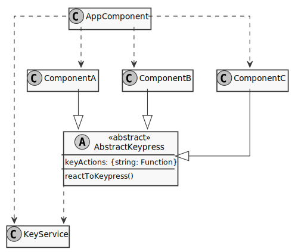

Navigation in an Angular application using keyboard shortcuts
My first reaction was “What? Why?”, quickly followed by a “Wow! Cool!” when I heard that a client had the requirement to permit navigating and executing commands in an Angular app using keyboard commands.
The reason for this somewhat unusual request was that we were building a replacement for a legacy application that has been doing duty for several decades. We didn’t want to disrupt the user experience of people used to the key shortcuts but merely augment the existing functionality with a “modern”, click-based interface. Here is a list of the requirements:
- Key strokes should cause navigation within the application as well as execute functionality within a page.
- The available commands were specific to the different pages, i.e. different Angular components support different key commands.
- Commands included the use of the shift, control and option/alt keys.
- Data entry into form elements should not trigger the functionality, obviously.
- Some commands required the processing of multiple key strokes, since they were
multi-character commands, such as
revfor “reverse order”. The implementation of this requirement is explained in a post on creating custom Rx.js operators
Architecture
Based on the aforementioned requirements, there are several technical consequences for its implementation:
- The event listener for key presses needs to be on an HTML tag near the root of the element tree to capture events from anywhere on the page through event bubbling.
- Though key press events need to be caught at or near the root of the DOM tree, they need to be
processed in the currently active component further down in the tree, because it contains
the implementation of the functionality to be triggered by the key command. Reacting to the
event in the
AppComponentwould cause us to handle the events for every component and module in one spot, which would be unwieldy and break encapsulation of functionality. This requirement suggests passing events from a parent (the root component) to the current child component. Several different components can have the same key binding, albeit for different functionality. - The previous point suggests the use of an Angular service, which is a singleton and can
be injected into every component. This enables the communication of events in the opposite
direction of the standard Angular event binding between many different components, i.e. from
a parent to a child component. The child components can be dynamically replaced through the
router. 1. Key strokes in form elements such as text boxes should not trigger a command, so
the implementation needs to account for this scenario and use the
event.stopPropagation()method in the right places. This will prevent those events from making it to the key event listener near the root element and thus prevent inadvertent execution of functionality.
Based on these requirements, we can see that we need an Angular Service to react and distribute
the events and an abstract class which will be inherited by every component that needs to
react to key events. This service will also need to be imported into the AppComponent root
of the application, so we can trigger the distribution of the event to the currently active
component.
Based on what we know now, the following architecture is one possibility to implement these technical requirements:

We have the AppComponent, which contains a <router-outlet></router-outlet> tag pair to
permit the router to fill that space with a component based on the URL — in this case with
one of the components ComponentA through ComponentC. The functionality to respond to a
valid key pressed lies in those components and is thus contained where it belongs.
Each of those components extends the abstract class AbstractKeypress, which will require
each extending component to provide
- a
keyActionsproperty with a mapping of the key codes to executable functions and - a
reactToKeypress()method which will be called whenever a specified key combination has been entered by the user.
This setup allows the developer to specify the key combinations and the corresponding actions to execute based on the key(s) pressed — separately and independently for each component.
Handling of keyboard events
As mentioned in the previous section, we will use an Angular Service, a singleton, to achieve
the communication from the AppComponent down to the component currently contained in the
router-outlet. To achieve this event-based communication, we will use Functional Reactive
programming, Rx.js, which will allow us later to cleanly write the processing of the events
generated here.
The code for the actual service is pretty straightforward and consists merely of an Rx Subject
which is exposed to the outside world as an Observable through a public class property. The
sole method in this service accepts and publishes to the subject a KeyboardEvent, which will
then lead to an onNext event on the publicly available observable.
@Injectable({ providedIn: 'root' })
export class KeyPressDistributionService {
private keyEventSubject = new Subject<KeyboardEvent>();
public keyEventObs: Observable<KeyboardEvent> = this.keyEventSubject.asObservable();
public distributeKeyPress(keyValue: KeyboardEvent): void {
this.keyEventSubject.next(keyValue);
}
}In order to react to user input, the AppComponent, i.e. the application’s root component,
contains a @HostListener on keyup events. This permits reacting to a keypress in any part
of the application’s interface through event bubbling, a standard browser behavior where any
event that has not been explicitly stopped from propagating will “bubble up” through the tree
to the root HTML element, in our case contained in the template for the AppComponent.
The AppComponent will then pass the corresponding KeyboardEvent to the
service we just looked at, via the distributeKeyPress() method. And that’s really all our
implementation requires in the AppComponent:
- Inject the
KeyPressDistributionServiceand - send any
keyupevents to the service.
By injecting the service into any child component, we can get notification of a key being
pressed through the exposed keyEventObs observable. Here’s the relevant code from
AppComponent:
@Component({ ... })
export class AppComponent {
@HostListener('document:keyup', ['$event'])
public onKeyUp(eventData: KeyboardEvent) {
this.keyService.distributeKeyPress(eventData);
}
constructor(private keyService: KeyPressDistributionService) { }
}Converting KeyboardEvent objects
If you’ve never looked at a KeyboardEvent in a browser console, I encourage you to do so:
There’s a lot of stuff in there. For purpose of this implementation, all I need is an
identifier which unambiguously tells me the
key combination the user pressed — Ideally in the form of a string, so that I can use that
identifier as the key in a configuration object telling Angular what to do in response to that
user action. Since further development will include multi-letter commands,
we need to namespace our events so that we can identify the following parts in a unique ID
string identifying the key combination pressed:
- If only a single key was pressed, as discussed in this post, we prefix the string with
k-for key. For multi-letter commands, where a user entersagrfor example, the prefix will bes-, for string. - The next segment in our identifier will list any special keys pressed at the same time,
afor the ALT key (OPTION on Macs),cfor CTRL ansfor SHIFT - Finally, the last segment will identify the key pressed, using the newer Javascript
property provided by the
KeypressEventobject, calledcodeand providing a string such asKeyD.
Using this paradigm, the string k-as-KeyF would indicate that the user pressed the f key at
the same time as the ALT and SHIFT keys and k--F5 identifies the F5 key without any modifying
keys pressed at the same time.
Since all keystroke events are ending up in the KeyPressDistributionService via a component, we
can implement the abstract class AbstractKeypress from our class diagram. This abstract class
will be extended by every component needing to react to key press events.
Here is the beginning of that class:
export abstract class AbstractKeypress implements OnInit, OnDestroy {
private obsRef: Subscription;
abstract keyActions: {[key: string]: () => void};
abstract reactToKeyPress(key: string): void;
protected constructor(private keyServiceRef: KeyPressDistributionService) { }
public ngOnInit() {
this.obsRef = this.keyServiceRef.keyEventObs
.pipe(
filter(this.permitKey),
map(this.convertToString)
)
.subscribe(
this.reactToKeyPress.bind(this),
);
}
public ngOnDestroy() {
this.obsRef.unsubscribe();
}
// ... more implementation here
}There are a few things noteworthy about this (part of the) class:
- It, like
AppComponent, gets theKeyPressDistributionServiceinjected to receive the events from theAppComponent - The implementation of the
OnInitandOnDestroyinterfaces allows us to set up the functionality in this class for every extending component on instantiation. - It uses the Rx.js paradigm in the
ngOnInit()method to handle the events, process the data and transfer the result to the extending class. - It contains two
abstractproperties (keyActionsandreactToKeyPress()) whose implementation is up to the extending class. These properties define which keys to listen for and how to process the events (keyActions). - The
keyActionsobject literal will be a mapping of a string as described in the previous section to a function, as indicated by its type signature. - It uses a functional reactive programming paradigm to do its job.
- There seem to be two methods,
permitKey()andconvertToString()which I am keeping from you at the moment.
Let’s look at the Rx chain, which pipes any event from the service through a filter that removes events from special keys and keys we do not want to listen to. For example, we do not want a separate event when the user presses the “Shift” key.
In the next step, we pipe the filtered event into the convertToString() method, which will
perform the conversion of the KeyboarEvent into a string as previously stated. Once we have
our identifying string for the entered key combo, we call the reactToKeyPress() method in the
onNext event of the subscription. This method is declared abstract in this class so that
any component extending this class will have to implement it.
That leaves the definition of the two operator functions, as shown here:
public permitKey(keyEvent: KeyboardEvent): boolean {
const disallowedKeys = ['Shift', 'Control', 'Alt', 'Meta'];
return !disallowedKeys.includes(keyEvent.key);
}
public convertToString(keyEvent: KeyboardEvent): string {
const modifierKeys = ['altKey', 'ctrlKey', 'shiftKey'];
let keyCode = 'k-';
for (const code of modifierKeys) {
if (keyEvent[code]) keyCode += code.substr(0, 1);
}
return `${keyCode}-${keyEvent.code}`;
}The permitKey() method filters out unwanted key press events; It returns
false for key codes contained in the disallowedKeys array, thereby suppressing events in the
Rx chain of the service via the filter operator..
The convertToString() method builds the identifying string described before, For example, the
string k-acs-KeyA indicates that the A key was pressed together with the ALT, SHIFT
and CONTROL keys, here prefixed with the string k- (for “key”).
That includes all the functionality of the abstract class. Let’s next look at how this class is extended by Angular components.
Implementing the components reacting to key presses
Here is an example of a component that extends the AbstractKeypress class:
@Component({ ... })
export class ExampleLandingComponent extends AbstractKeypress {
public keyActions: {[key: string]: () => void} = {
'k--KeyA': () => { console.log('reacting to A'); },
'k-as-KeyD': this.deleteSomething,
'k--F5': () => { console.log('F5 clicked!!!'); }
};
constructor(private keyService: KeyPressDistributionService) {
super(keyService);
}
public reactToKeyPress(key: string): void {
if (this.keyActions[key]) this.keyActions[key]();
}
private deleteSomething(): void {
console.log('deleting something due to key click');
}
}We see that it specifies the keyActions as an object literal with the previously explained
key format and assigns functions to each key, with the one for Alt+Shift+D calling up the
deleteSomething() method defined in this component. As usual in Angular, the service is
injected through the constructor.
The method reactToKeyPress() is defined here as required by the class AbstractKeypress
and simply calls the method defined in the keyActions definition. It would be possible, to
assign certain functionality to the component that is not defined in keyActions, should the
need arise.
One more noteworthy fact is that we inject the KeyPressDistributionService here and call
super() in the constructor, to form the connection with the abstract class. The implementation
thus far gives us the capability to define key commands in the browser and execute functionality
that we specify for different commands. One thing missing from our list of requirements is to
suppress the entry of information into form field, which we’re looking at next.
Adding a form to the component
Web apps are nothing without the use of forms. And of course, entering content into text fields is standard functionality but will interfere with our current navigation scheme, if we don’t take action to prevent that interference.
Here is the relevant part of a template for a component with a reactive form, setting a
formGroup property binding and an event binding for form submission on the root element
of the form:
<form [formGroup]="userForm" (ngSubmit)="onSubmit()" (keypress)="stopKeyPressPropagation($event)" >
<ul>
<li> ... </li>
<li> ... </li>
</ul>
<button>Submit</button>
</form>The last event binding is for the keypress event to which we’re assigning a method, which
looks like this:
public stopKeyPressPropagation($event) {
$event.stopPropagation();
}No magic here: When a keypress event is about to bubble out of the form, this code captures
the event and calls the stopPropagation() method on it, thereby preventing the event to ever
make it to our event listener on the top-level HTML element triggering our logic. Note that if
you change the event used in the service, the event will have to be likewise adapted in all
templates containing forms. Overall, though, this implementation nicely separates the entry of
data into a form field from the navigation scheme cooked up in this post.
Summary
In this blog post I looked at how one could implement a mechanism to allow applications to provide a means to execute functionality using keyboard commands. Going along in the implementation, I demonstrated how to separate commands from different Angular components to isolate and structure the functionality, avoid interference with form input fields and showed how one could pass events from a parent to a child component via an Angular service.
In a follow-up post, I will look at how to extend this implementation to permit multi-key
commands, such as the rev mentioned earlier, which might be used to indicate that the
user wants to review something.
The code for this implementation, including the upcoming implementation of the multi-key commands is in bitbucket.